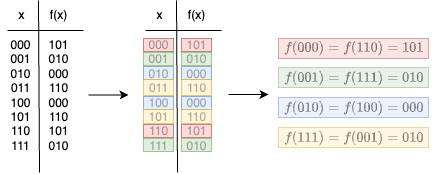

Deutsch-Jozsa's algorithm provided a noticeable speedup from the classical counterpart, the Bernstein-Vazirani providing an even larger speedup.
However, Simon's algrithm provides an exponential speedup from it's classical counterpart
Simon's problem is another promise problem, it taking in \( n \) bit binary strings and returns \( m \) bit binary strings. Defined as
Like the Bernstein-Vazirani problem, we have a hidden string \( s \) that we are trying to find.
Let's take a look at our promise
\[ \left[ f(x) = f(y) \right] \Longleftrightarrow \left[ (x = y)\quad or \quad(x \oplus s = y) \right] \]What is this promising us? It is promising us that \( f(x) = f(y) \) if and only if
1. \( x = y \)
It is quite obvious why, this happens when \( s = 0^n \).
If \( s \) is an all 0 string, the of any string with an all 0 string, is just that string, so \( f(x) = f(y) \), making it a one-to-one function
or
2. \( x \oplus s = y \)
If the first promise isn't satisfied, that means that \( s \) is not an all 0 string, and it is a two-to-one function.
This means that for every input string \( x \) there is another string that f(x) maps to with the same output, and the second string must be the output of the \( x \oplus s \).
John Watrous states this very kindly -
"Every \( n \) bit string \( x \) has a partner, and that partner is the string that we get by taking the bitwise \( XOR \) with the string s. Any two partners must give us the same output string." (55:40)
Let's take a look at the table when \( n = 3 \)
How do we know what our hidden string \( s \) is? Well, let's look at our pairs, and \( XOR \) them to find out
\[ 000 \oplus 110 = 110 \] \[ 001 \oplus 111 = 110 \] \[ 010 \oplus 100 = 110 \] \[ 111 \oplus 001 = 110 \]Something tells me that our hidden string \( s = 110 \)
Now let's run through our
Notice we don't pass a \( \ket{1} \) into our circuit, this means that we won't be performing .
\( |\Psi_1\rangle \):
Our ket at this time is
\[
\ket{0}^{\otimes n}
\]
Not much to say here, we haven't processed anything, so our stream of bits is simply n amounts of \( \ket{0} \)'s
\( |\Psi_2\rangle \):
We now send our top \( n \) \( \ket{0} \)'s into hadamarad gates, leaving us with the familiar state
\[
H\ket{0}^{\otimes n} \ket{0}^{\otimes n}
\longrightarrow
\frac{1}{\sqrt{2^n}} \sum_{x \in \{0,1\}^n} \ket{x} \ket{0}^{\otimes n}
\]
This is stating that we now have \( n \) qubits in a superposition state, along with \( n \) amounts of \( \ket{0} \)'s
\( |\Psi_3\rangle \):
Now, we have applied our oracle \( U_f \), which applies \( \ket{y \oplus f(x)} \) to our remaining \( \ket{0}^{\otimes n} \)
\[
U_f \frac{1}{\sqrt{2^n}} \sum_{x \in \{0,1\}^n} \ket{x} \ket{0}^{\otimes n}
\longrightarrow
\frac{1}{\sqrt{2^n}} \sum_{x \in \{0,1\}^n} U_f \ket{x} \ket{0}^{\otimes n}
\longrightarrow
\frac{1}{\sqrt{2^n}} \sum_{x \in \{0,1\}^n} \ket{x} \ket{f(x)}
\]
\( |\Psi_4\rangle \):
With this state, we apply another hadamarad gate
\[
H^{\otimes n} \frac{1}{\sqrt{2^n}} \sum_{x \in \{0,1\}^n} \ket{x} \ket{f(x)}
\longrightarrow
\frac{1}{\sqrt{2^n}} \sum_{x \in \{0,1\}^n} H\ket{x}^{\otimes n} \ket{f(x)}
\]
So looking what H does for \( \ket{0} \) we can see what it will do for \( \ket{x}^{\otimes n} \)
\[
H\ket{0}^{\otimes n}
\longrightarrow
\frac{1}{\sqrt{2^n}} \sum_{x \in \{0,1\}^n} \ket{x}^{\otimes n}
\]
So,
\[
H\ket{x}^{\otimes n}
\longrightarrow
\frac{1}{\sqrt{2^n}} \sum_{y \in \{0,1\}^n} (-1)^{x \cdot y} \ket{y}
\]
And we can now redefine \( H\ket{x}^{\otimes n} \)
\[
\frac{1}{\sqrt{2^n}} \sum_{x \in \{0,1\}^n} \left(
\frac{1}{\sqrt{2^n}} \sum_{y \in \{0,1\}^n} (-1)^{x \cdot y} \ket{y}
\right) \ket{f(x)}
\]
Which we can rewrite as
\[
\frac{1}{2^n} \sum_{y \in \{0,1\}^n} \sum_{x \in \{0,1\}^n} (-1)^{x \cdot y} \ket{y} \ket{f(x)}
\]
We now measure, and notice that similarly to Bernstein-Vazirani's algorithm, we measure the rightmost qubits, and drop the \( y \)
\[
\frac{1}{2^n} \sum_{y \in \{0,1\}^n} \sum_{x \in \{0,1\}^n} (-1)^{x \cdot y} \ket{y} \ket{f(x)}
\longrightarrow
\]
\[
\left| \left| \frac{1}{2^n} \sum_{x \in \{0,1\}^n} (-1)^{x \cdot y}\ket{f(x)} \right| \right|^2
\]
We see that we have to do two things
1. Evaluate for \( x \) possible \( n \) bit binary strings, which we will refer to as \( r(f) \), but can be formally stated as
\[
\{f(x)\, : x \, \in \textstyle\sum_{}^n \}
\]
2. Evaluate for all r(f) when our condition \( f(x_1) = z \) is met, where \( x_1 \) denotes the current bitstring we are evaluating, and \( z \) denotes the bit string that , but formally is denoted by
\[
\{ x \, \in \textstyle\sum{}^n \, : \, f(x)=z \}
\]
Note, we must also evaluate for all outputs of \( z \) that derive from the \( XOR \) on the secret string s, this can be denoted by \( x_2 \)
\[
x_1 \oplus s
\]
This means that we can rewrite our equation as
\[
\left| \left|
\frac{1}{2^n} \sum_{z \in r(f)} \left(
\vphantom{\frac{ \ket{0} + \ket{1} }{\sqrt{2}}}
(-1)^{x_1 \cdot y} + (-1)^{(x_1 \oplus s) \cdot y}
\right) \ket{z}
\right| \right|^2
\]
Notice that we can rewrite \( (x_1 \oplus s) \cdot y \) as \(( x_1 \cdot y \oplus s \cdot y )\)
\[
\left| \left|
\frac{1}{2^n} \sum_{z \in r(f)} \left(
\vphantom{\frac{ \ket{0} + \ket{1} }{\sqrt{2}}}
(-1)^{x_1 \cdot y} + (-1)^{( x_1 \cdot y \oplus s \cdot y )}
\right) \ket{z}
\right| \right|^2
\]
And factor out \( (-1)^{x_1 \cdot y} \)
\[
\left| \left|
\frac{1}{2^n} \sum_{z \in r(f)} \left(
\vphantom{\frac{ \ket{0} + \ket{1} }{\sqrt{2}}}
1 + (-1)^{(s \cdot y )}
\right) \ket{z}
\right| \right|^2
\]
\( z \) isn't relevant to our probability at the moment, so we can drop it and rewrite our expression as
\[
\bigg| 1+(-1)^{s \cdot y} \bigg|^2
\]
And finally, we see two output cases
\( s \cdot y = 0 \)
\[
\bigg| 1+(-1)^{0} \bigg|^2
\longrightarrow
\bigg| 1+1 \bigg|^2
\longrightarrow
\bigg| 2 \bigg|^2
\longrightarrow
4
\]
Generally, this is stated as
\( s \cdot y = 0 \)
\[
\longrightarrow
\frac{1}{2^{n-1}}
\]
and
\( s \cdot y = 1 \)
\[
\bigg| 1+(-1)^{1} \bigg|^2
\longrightarrow
\bigg| 1-1 \bigg|^2
\longrightarrow
0
\]
Now, we can process the outputs we have determined to get the final answer, we see that we have two final cases
1. \( s = 0^n \)
This, as we already determined, will give us a trivial random string
2. \( s \ne 0^n \)
as \( s \cdot y = 1 \) has a probability of 0 to occur as proven, we will ignore it
When \( s \cdot y = 0 \), we have a \( \frac{1}{2^{n-1}} \) chance to measure a string y
Well is this enough to determine \( s \)? Yes, because each time we run this algorithm, it narrows the margin of error.
For example, if \( n \) = 10, we have a 99.9% accuracy to recover the hidden string \( s \), good enough in my book.
This provides an exponential speedup to the classical counterpart.